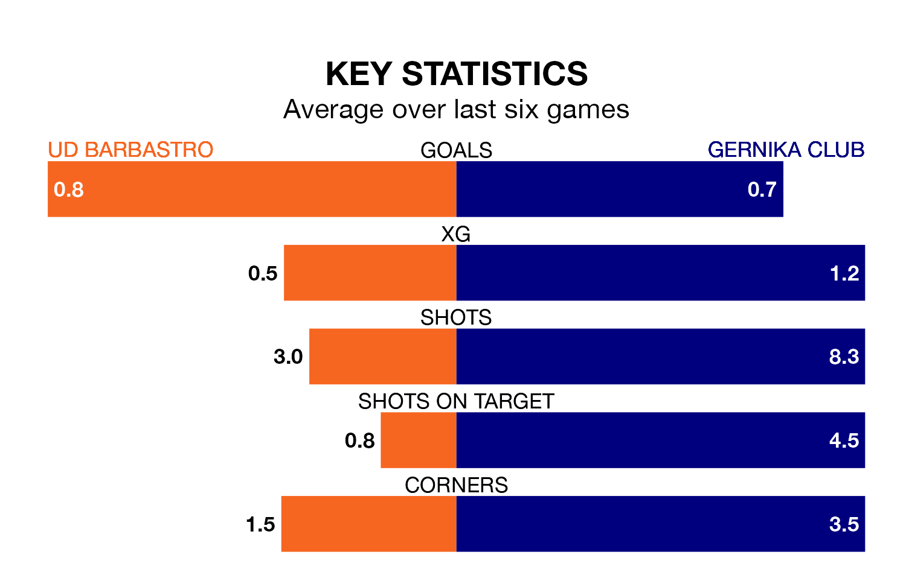

UD Barbastro host Gernika Club on Wednesday in Segunda División RFEF Group 2.
In their last league match, on December 16, Barbastro beat Real Sociedad III 1-0 away.
Gernika Club drew, 1-1 at home against Athletic Club B on December 17.
With 14 goals in 16 games so far this season, Barbastro are scoring at below the league average rate with 0.9 goals per game. And they are conceding at an average rate, letting in 17 goals at a rate of 1.1 per game.
Gernika Club, meanwhile, are average scorers, with 1.1 goals per game. They have conceded 1.6 goals per game.
The hosts are in reasonable form in Segunda División RFEF Group 2, with three wins and two draws from their last six games.
With a win and two draws over that period, the away team's form is much worse – they have taken five points from 18, compared to Barbastro's 11.
Barbastro are ninth in the table after 16 games, of which they have won five and drawn six, earning 21 points.
Gernika Club are one place behind the home side in 10th, with four wins and eight draws putting them on 20 points.
Updated: 10:50, 10/01/24